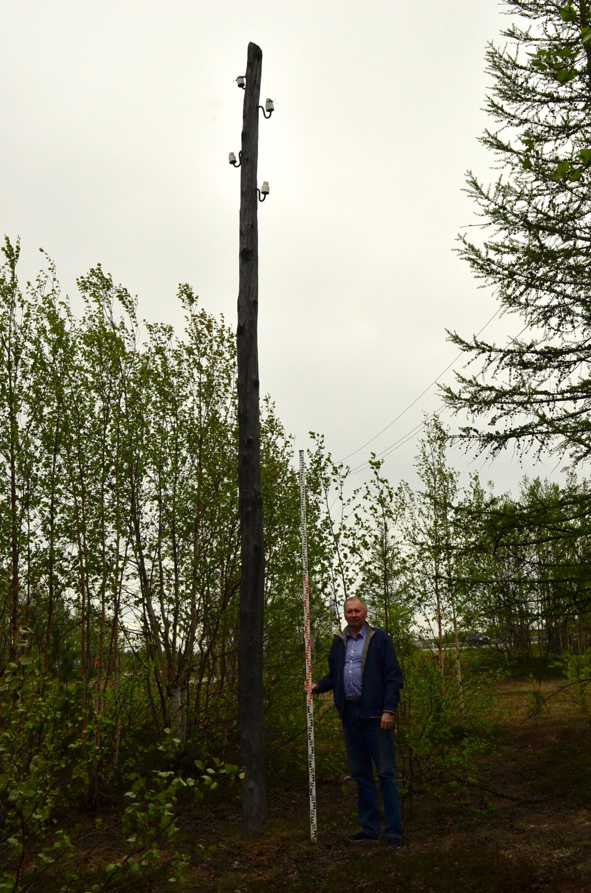
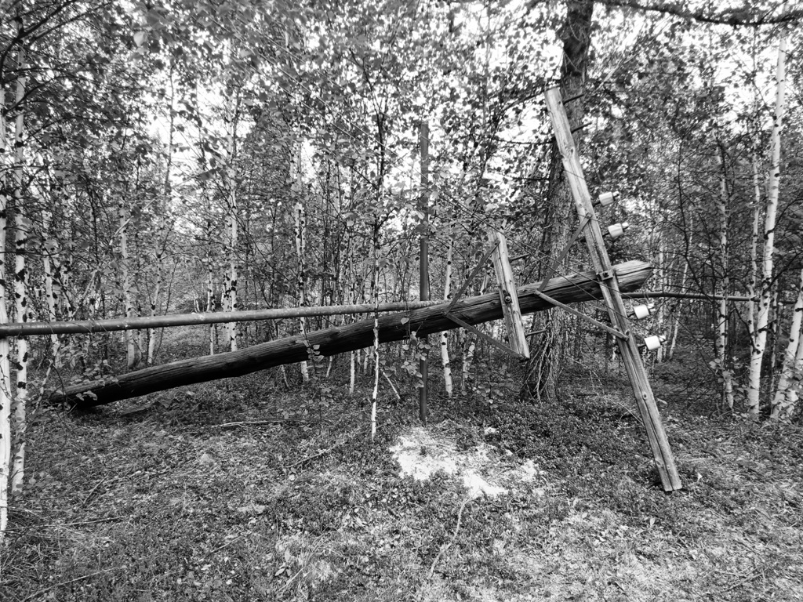
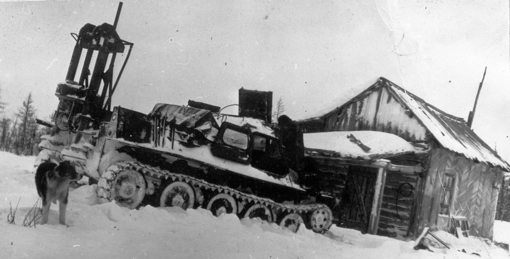
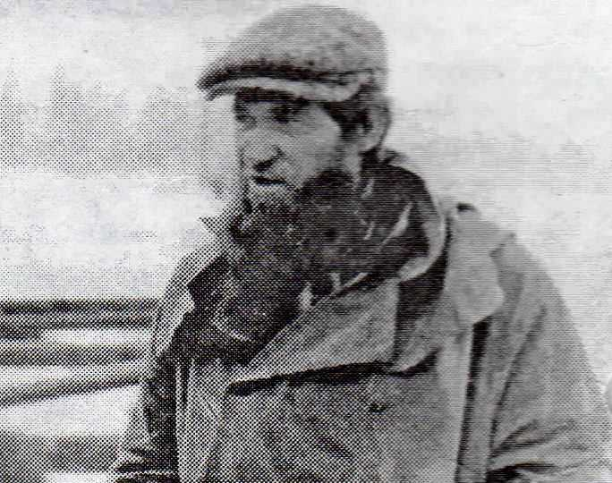

В мировой урбанистике – науке о развитии городов, существует мнение о том, что история всех населённых пунктов начинается с момента появления на их территории первых людей. Историю городов в основном ведут от первого письменного упоминания его предшественника – деревни или посёлка. Считается, что даже если за это время поселение сменило свое название, это не страшно.
Мы знаем, кем были первые жители нашего города, и где они проживали. Прямо перед вами в этом небольшом берёзовом колке стоит старый деревянный столб. Стоит с 1949 года.
Именно тогда здесь была построена изба для линейных монтёров государственной телефонно-телеграфной линии связи Москва-Игарка, проложенной в 1949-51 годах в ходе строительства трансполярной железнодорожной магистрали Салехард-Игарка. Это были вольнонаёмные люди, обеспечивавшие связь на всём протяжении знаменитых строительств № 501 и № 503.
{kind=link}

На месте современного железнодорожного вокзала города Новый Уренгой собирались построить станцию Ягельную, но сделать этого не смогли. Стройку вели от Салехарда и Игарки навстречу друг другу, и довести строительство до его центральной части не успели. Стройка была закрыта в 1953 году после смерти её идеолога – руководителя нашей страны – И.В. Сталина. Железную дорогу и лагерные пункты с множеством строений, и оборудования бросили, людей вывезли, а линейные монтёры остались. Организация, которая ведала их работой в Министерстве связи СССР, располагалась в городе Салехарде. Она много раз меняла свое название, и в конце 1970-х годов называлась Эксплуатационно-технический участок связи (ЭТУС).
Избушки линейных монтёров стояли вдоль линии через каждые 20 километров. В обязанности работников входил осмотр своего участка и ремонт линии. Зимой медные провода толщиной 4 мм часто обрастали изморозью и на ветру рвались. Линейные монтёры выходили для их восстановления в любую погоду, залезали на нужный столб и связывали провода временной скруткой. Летом уже проводили более тщательный ремонт. Осенью появлялась другая проблема – вечная мерзлота выдавливала из земли столбы.
{kind=link}

Каждый столб весил около 300 килограммов. Их временно подпирали так, чтобы провода не касались земли, а в начале зимы монтёры объединялись в ремонтную бригаду, которая проходила по трассе и сообща устанавливали их в нужном положении. На некоторых точках жили по одному, на других – по нескольку человек. Люди это были, хоть и вольнонаёмные, но по разным причинам не желавшие жить на Большой земле. Многие были бывшими заключёнными, попавшими под амнистию. Некоторые, наоборот, бывшими служащими лагерной охраны. Были и просто любители уединенной жизни в лесу, занимавшиеся охотой и рыбалкой.
Избушки построили в своё время силами заключённых недалеко от лагерных пунктов. Ближайший из них существовал примерно в 200 метрах южнее железнодорожного вокзала. Деревянные постройки лагеря не сохранились по двум причинам. Они были построены из приличных строительных материалов, которые потом использовали монтёры, а за ними в 1970-х годах первопроходцы-основатели посёлка Ягельное для своих строительных нужд. С другой стороны, высушенные полярными ветрами и солнцем брёвна и штакетины были прекрасными дровами, которых нужно было немало. В 1950-60-х годах здесь работали партии разведчиков нефти и газа – геофизиков. Им тоже нужно было греться. Вот так за 25 лет разобрали лагерный пункт. А избушка монтёров линии связи дождалась своего летописца и нечаянно попала в объектив фотографов в декабре 1973 года.
Но обо всём по порядку. После того, как в 1966 году была пробурена разведочная скважина Р-2, доказавшая существование перспективного, а впоследствии известного всему миру Уренгойского нефтегазоконденсатного месторождения, стало понятно, что рядом с ней нужно строить рабочий поселок.

Для того, чтобы в местной неприветливой тундре выбрать хороший участок, здесь уже в 1966 году провели мерзлотные инженерно-геологические и топографические работы под промбазу и посёлок Ягельное (будущий Новый Уренгой) работники Государственного института по проектированию оснований и фундаментов «Фундаментпроект» (г. Москва). В 1967 году в старый Уренгой прибыли представители уже ленинградского проектного института для поиска места под строительство будущего посёлка газодобытчиков.
В сентябре 1973 года именно сюда прилетел вертолёт с правительственной комиссией, которая осмотрела место под будущий поселок.

Начальник Главного территориального производственного управления по строительству магистральных трубопроводов в районах Севера и Западной Сибири Миннефтегазстроя СССР В. Г. Чирсков, участник этой комиссии вспоминал: «наш вертолёт приземлился в излучине реки Евояхи недалеко от домика линейного обходчика телефонной связи Москва-Игарка. Хотя стояла осень, но снега было по щиколотку».
В конце декабря 1973 года из Пангод именно сюда прибыл санно-тракторный десант основателей посёлка. Прибыл к домику людей, которые здесь жили уже несколько лет. 24 декабря избушку линейных монтёров сфотографировали прилетевшие фотокорреспонденты. Сейчас эта фотография хранится в Музее истории ООО «Газпром добыча Уренгой». У неё имеется вот такая подпись.
{kind=link}

Очевидно, что изыскателям некогда и незачем было строить себе жилище. Их приютили линейные монтёры.
История, к сожалению, пока не раскрыла нам все свои тайны, и мы не знаем имена и фамилии тех линейных монтёров, которые трудились здесь с 1949 по 1973 год. Но мы знаем тех, кого здесь встретили первопроходцы – первых жителей нашего города. Это были Александр Иванович Басманов и Сергей Спиридонович Колов.
{kind=link}

На двухкилометровых картах окрестностей Нового Уренгоя 1989 года с указанием «состояние местности на 1976 год», недалеко от излучины реки Евояха обозначен характерный условный знак и надпись «изба».
Она располагалась на краю высокой, до 6 метров, первой надпойменной террасы. Проецирование её на современные картографические носители показало, что «изба» находилась между современным предприятием «Центральные очистные сооружения канализации Уренгойводоканал» и современной железной дорогой.

Данные картографии подтверждают сведения геологоразведчика Азата Ахметовича Ахметова, который прибыл на площадку будущего города в 1969 году. Вот, что он пишет об А. И. Басманове: «Ему тогда лет 40-45 было, коренастый такой, крепыш, одним словом. Замкнутый, неразговорчивый. Хорошо знал места вокруг, рыбачить любил. Наши парни с ним за рыбой ездили – надоедала тушенка всё-таки. Жил он в брусчатом бараке, недалеко от того места, где находятся сейчас очистные. Мы попервости ночевали у него».
Ещё несколько избушек монтёров располагались в пространстве современных жилых массивов Нового Уренгоя и между ними. Например, известно, что на территории Лимбяяхи, в землянке на озере Ямылимуяганто в начале 1970-х годов работал связист Андрей. На 51-ом километре в сторону современного Коротчаево жил связист Слава.
В конце 1970-х годов линию связи в районе Нового Уренгоя ликвидировали. Линейные монтёры нашли себе другие места работы. Избушка завалилась, и вскоре её разобрали на дрова и стройматериалы, или она попала под застройку железной дороги. Но один столб – свидетель тех давних времен – остался.